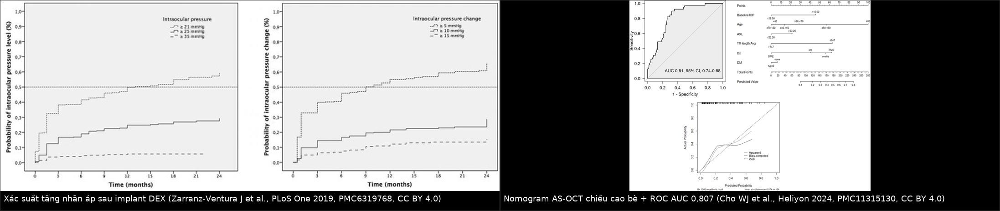
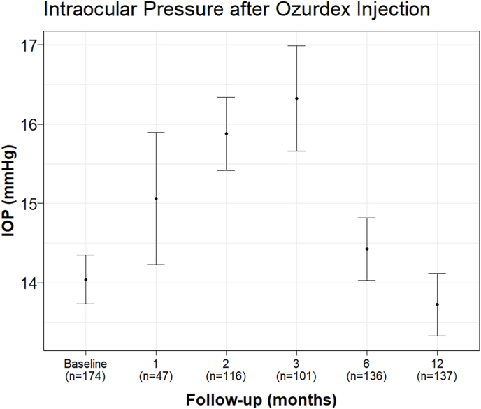

1411 — Tăng nhãn áp do corticoid nội nhãn & implant dexamethasone/fluocinolone / Steroid-induced ocular hypertension with intravitreal steroid implants
Tags: pattern:tang-nhan-ap pattern:giot-implant pattern:phu-giac-mac vung:tien-phong vung:dich-kinh protocol:AS-OCT protocol:gonioscopy protocol:do-nhan-ap score:IOP
Mức chắc chắn (certainty): tổng hợp y văn (literature synthesis) — gộp 3 đoàn hệ lớn về implant dexamethasone (705 mũi/429 mắt, PMC6319768; 309 mắt, PMC12340189; 171 mũi, PMC13047022), một nghiên cứu nomogram AS-OCT 154 mắt (PMC11315130), một loạt 64 mũi có đường cong IOP theo tháng (PMC11872671), một loạt 16 mắt đặt PreserFlo (PMC11765877), loạt 15 mắt SLT sau implant fluocinolone (PMC13487927) và loạt 640 mũi về di lệch implant vào tiền phòng (PMC6537356). Chưa có ca nguyên văn của nhóm.
Vì sao bài này quan trọng: mắt được tiêm corticoid nội nhãn không phải "tiêm rồi về". Tăng nhãn áp (ocular hypertension, OHT) sau implant dexamethasone (DEX-I) xuất hiện ở 20,9%/12 tháng (23,3% theo mũi tiêm) ở một loạt 74 mắt, 37,9% ở đoàn hệ Thụy Điển 309 mắt, và xác suất tích lũy tới 50–60% với IOP ≥ 21 mmHg, 25–30% với ≥ 25 mmHg, 6–7% với ≥ 35 mmHg ở 12–24 tháng. Điểm chốt: đỉnh tăng áp ở tháng 2–3, phần lớn đáp ứng thuốc nhỏ, nhưng 0,9% phải mổ glaucoma — và một nhóm nhỏ lại tăng áp vì implant di lệch vào tiền phòng (0,63%), nơi xử trí là lấy implant, không phải tăng thuốc. Bài này dạy phân biệt hai con đường đó.
1. Tổng quan bệnh học – cơ chế hình ảnh – vì sao corticoid làm tắc "cửa thoát" thủy dịch
- Giải phẫu–sinh lý quyết định mọi thứ: thủy dịch (aqueous humour) do thể mi tiết ra, thoát 85–90% qua đường bè – ống Schlemm (trabecular/conventional outflow) và 10–15% qua đường bàng bè (uveoscleral). Nhãn áp IOP = F/C + P_ev (F = lưu lượng tiết, C = khả năng thoát, P_ev = áp lực tĩnh mạch thượng củng mạc). Vì vậy bất kỳ thứ gì bít bè đều tăng IOP mà không cần "viêm".
- Cơ chế tại bè (trabecular meshwork, TM) — vì sao không phải "phù" mà là "xơ hóa": glucocorticoid gắn thụ thể GR trong tế bào bè → tăng tổng hợp chất nền ngoại bào (ECM): fibronectin, laminin, collagen IV, versican; giảm hoạt proteolytic (MMP) và tăng chất ức chế (TIMP) → ma trận dày lên trong vùng áp (cribriform) và thành trong ống Schlemm; đồng thời tế bào bè tăng co rút và tạo mạng actin liên kết chéo (cross-linked actin networks, CLANs). Trục phân tử đã được lập bản đồ: DEX → SP1 tăng phiên mã ANGPTL7 → RhoA/ROCK → CLANs (PMC8826420); knock-down ANGPTL7 làm giảm CLANs. Hệ quả định lượng: giảm khả năng thoát (outflow facility), chứ không phải tăng tiết thủy dịch.
- Vì sao có người đáp ứng mạnh, người không: kiểu hình "responder" mang tính cá thể (khác biệt phiên mã của tế bào bè ở người đáp ứng vs không đáp ứng — PMC9140469); vì vậy tiền sử đáp ứng corticoid ở mắt bên kia hoặc ở đợt tiêm trước là dữ kiện mạnh nhất, mạnh hơn mọi thông số hình ảnh.
- Tại sao hình ảnh lại quan trọng: bè không nhìn thấy trên OCT thường, nhưng AS-OCT (anterior segment OCT) đo được chiều cao bè và bề dày ECM; đưa chiều cao bè vào mô hình dự báo làm AUC tăng từ 0,644 lên 0,807 (95% CI 0,737–0,877; n = 154 mắt, 39 mắt SIOH; PMC11315130). Đây là ví dụ sạch của nguyên lý: mô bệnh (ECM dày) → thông số đo được (chiều cao bè) → nguy cơ lâm sàng.
- Dược động của 3 loại implant (quyết định thời gian tăng áp):
- Dexamethasone 0,7 mg (Ozurdex) — polymer PLGA tự phân hủy, giải phóng ~6 tháng; đỉnh IOP tháng 2–3, giảm dần khi implant tan. Vì thế tháng 2–3 là cửa sổ phải đo, không phải ngày 1.
- Fluocinolone acetonide 0,19 mg (Iluvien) / 0,18 mg (Yutiq) — không phân hủy, tác dụng 18–36 tháng: tăng áp không tự hết khi hết "đợt", mà kéo dài suốt thời gian implant còn tác dụng → cần SLT hoặc phẫu thuật nếu thuốc nhỏ không đủ.
- Triamcinolone acetonide (TA) tiêm nội dịch kính — tinh thể lắng, tồn tại 1–3 tháng. So sánh trực tiếp trên cơ sở dữ liệu lớn (1.665 bệnh nhân DEX-I vs 3.866 bệnh nhân TA): 8,8% vs 7,3% cần điều trị OHT; sau 40 ngày, DEX-I có nguy cơ cao hơn TA (HR 1,41; 95% CI 1,08–1,86; p = 0,01) — tức "implant" không an toàn hơn TA như nhiều người tưởng (PMC13216112).
- Vì sao tăng áp "vô hại" lại đáng sợ: IOP tăng mạn làm tổn thương bó nhú–hoàng điểm và lớp sợi thần kinh (RNFL) trong khi thị lực trung tâm còn tốt; do đó theo dõi bằng OCT RNFL/đĩa thị và thị trường, không bằng "bệnh nhân thấy bình thường". Đồng thời implant nằm trong tiền phòng tiếp xúc nội mô → phù giác mạc không hồi phục nếu không lấy ra sớm.
2. Mẫu hình + chẩn đoán phân biệt theo vị trí (gamut)
- Mẫu hình 1 — "tăng áp đơn thuần, góc mở, không viêm" (steroid response): IOP tăng từ tuần 2–4, đỉnh tháng 2–3 với DEX-I; góc mở, không dính góc, không tế bào tiền phòng, không giảm thị lực cấp; mắt bên kia (nếu có tiêm) thường tăng tương tự.
- Mẫu hình 2 — "tăng áp + implant lạc vào tiền phòng" (AC migration): thấy thanh implant trắng–vàng, hình que (rod) nằm ở góc dưới tiền phòng, chạm nội mô, kèm phù giác mạc lan tỏa + nếp gấp màng Descemet; đây là cấp cứu nhãn khoa (Hình 1). Tần suất 0,63% (4/640 mũi), 100% là mắt đã cắt dịch kính + thể thủy tinh nhân tạo, và yếu tố quyết định là mất toàn vẹn bao/zinn (so với mắt cắt dịch kính còn bao nguyên: p = 0,008; so với mắt còn thể thủy tinh: p = 0,009).
- Mẫu hình 3 — "tăng áp do viêm bè (trabeculitis)": tế bào tiền phòng, tỳ vết (KPs) trên nội mô, dính góc, đau; đây là bệnh đang hoạt động, xử trí khác hoàn toàn (chống viêm, không ngừng corticoid).
- Mẫu hình 4 — "tăng áp do nguyên nhân không do corticoid": thể keo (viscoelastic) còn lại (tăng ngay 6–24 giờ, tự hết); xuất huyết dịch kính/tế bào ma (ghost cell) ở mắt cắt dịch kính; glaucoma tân mạch ở RVO/ĐTĐ thiếu máu (rubeosis, dính góc); pupillary block do khí/dầu/implant lớn kẹt đồng tử.
- Gamut theo mốc thời gian sau tiêm — cách nhớ nhanh:
- < 24 giờ: thể keo, bong hắc mạc, phản ứng viêm cấp, (hiếm) tắc động mạch trung tâm.
- 1–7 ngày: viêm bè, viêm nội nhãn (đau + giảm thị lực + mủ), implant di lệch sớm.
- 2 tuần – 3 tháng: đỉnh của steroid response; đồng thời là lúc implant co lại và có thể trôi qua bao/zinn yếu vào tiền phòng.
- > 3 tháng: tăng áp do FAc kéo dài, glaucoma tiến triển trên mắt có tổn thương sẵn, phù giác mạc do implant nằm lâu trong tiền phòng.
3. Bảng so sánh phân biệt (ma trận đối chiếu)
| Thực thể (entity) | Hình ảnh / dấu hiệu điển hình | Chốt vào (rule-in) | Chốt loại (rule-out) | Gợi ý xác nhận |
|---|---|---|---|---|
| Tăng áp do corticoid (steroid response) | Góc mở, không dính; tiền phòng không tế bào; AS-OCT: chiều cao bè tăng, ECM dày | IOP tăng ≥ 10 mmHg hoặc ≥ 25 mmHg sau tiêm, đỉnh tháng 2–3, không đau, không viêm, mắt bên kia tương tự | Implant thấy trong tiền phòng, có tế bào/KPs, hoặc rubeosis | Đo IOP đúng lịch tháng 1–2–3; gonioscopy; AS-OCT bè; đáp ứng thuốc nhỏ |
| Implant lạc tiền phòng (AC migration) | Thanh implant hình que ở góc dưới, chạm nội mô; phù giác mạc + nếp Descemet; có thể implant "đi rồi về" | Thấy implant trong tiền phòng trên đèn khe/AS-OCT; tiền sử cắt dịch kính + thể thủy tinh nhân tạo, đặc biệt IOL cố định củng mạc / zinn yếu (p = 0,008) | Chỉ tăng áp không thấy implant; giác mạc trong | Soi đèn khe toàn chu vi góc dưới, AS-OCT; lấy implant sớm nếu chạm nội mô |
| Viêm bè (trabeculitis) | Tế bào tiền phòng, KPs, dính góc, đau, có thể giảm thị lực | Tế bào/KPs + tiền sử viêm màng bồ đào; đáp ứng corticoid chứ không phải ngừng corticoid | Tiền phòng trong, không đau, IOP tăng đơn thuần | Đèn khe + đáp ứng điều trị; phân biệt với viêm nội nhãn (mủ, giảm thị lực nhanh) |
| Thể keo tồn lưu | IOP tăng ngay 6–24 giờ, tiền phòng sâu, không viêm | Tăng áp ≤ 24 giờ sau tiêm, tự hết trong 24–48 giờ, không cần điều trị dài | Tăng áp kéo dài > 1 tuần; có dấu hiệu viêm | Theo dõi 24 giờ; không vội dùng thuốc hạ áp kéo dài |
| Glaucoma tân mạch (RVO/ĐTĐ) | Rubeosis mống mắt/góc, dính góc, IOP rất cao, đau | Mạch tân sinh ở góc/đồng tử; tiền sử thiếu máu võng mạc | Góc mở sạch, không rubeosis | Gonioscopy + FA/ OCTA võng mạc; điều trị anti-VEGF + panretinal photocoagulation |
| Pupillary block | Tiền phòng nông, đồng tử giãn cố định, IOP tăng cấp, đau | Chênh IOP > 8 mmHg giữa hai mắt, tiền phòng nông khu trú, thấy bọt khí/dầu/implant kẹt đồng tử | Tiền phòng sâu, không chênh, góc mở | Soi góc mắt bên; nếu do dầu/khí → tư thế + lấy bớt; nếu do implant → lấy |
| Tăng áp kéo dài do fluocinolone | IOP tăng không giảm sau 6 tháng, không có đợt "tan" implant; AS-OCT bè dày | OHT 24,6% (42/171 mắt); yếu tố: tuổi trẻ hơn (p = 0,036), OHT/glaucoma có sẵn (p = 0,034) | Implant DEX (tự tan) với IOP đã về bình thường sau 6 tháng | Theo dõi IOP suốt 18–36 tháng; SLT khi thuốc nhỏ không đủ |
Ảnh 1 — biến chứng "thấy được" của corticoid nội nhãn: implant di lệch vào tiền phòng.

Nguồn: Röck D et al., BMC Ophthalmol 2019 (PMC6537356) Fig. 1 — CC BY 4.0, nguyên bản.
Ảnh ghép — hai mô hình định lượng của cùng một quyết định ("có cần điều trị và điều trị bao lâu").

Nguồn từng ô: Zarranz-Ventura J et al., PLoS One 2019 (PMC6319768) Fig. 2 — CC BY 4.0; Cho WJ et al., Heliyon 2024 (PMC11315130) Fig. 1 — CC BY 4.0.
4. Protocol chụp/đo + hệ phân độ & lịch theo dõi
- Lịch đo IOP (bắt buộc, đúng "nhịp" dược động): trước tiêm (nền) → 1 tuần → 1, 2, 3, 6, 12 tháng (đúng bộ mốc của nghiên cứu nomogram PMC11315130). Với DEX-I, tháng 2 và 3 là bắt buộc vì đó là đỉnh; với FAc, theo dõi suốt 18–36 tháng vì implant không tan.
- Đo bằng gì: Goldmann applanation là chuẩn; nếu giác mạc phù/dày hoặc vừa mổ, ghi rõ phương pháp (Tonopen/ICare) và không so sánh trực tiếp hai phương pháp. Luôn đo cả hai mắt — chênh lệch là dữ kiện chẩn đoán (pupillary block, steroid response một bên).
- AS-OCT tiền phòng: đo chiều cao bè, độ mở góc (TISA, AOD), bề dày ECM, và vị trí implant (dịch kính vs tiền phòng); đây là công cụ vừa dự báo (AUC 0,807) vừa xác nhận cơ chế.
- Phân tầng nguy cơ trước tiêm (dùng được ngay trên giấy):
- Tiền sử đáp ứng corticoid (mắt bên kia, đợt tiêm trước, corticoid nhỏ kéo dài) — yếu tố mạnh nhất.
- Glaucoma/OHT có sẵn (FAc: p = 0,034).
- Tuổi trẻ hơn với FAc (p = 0,036).
- Nam giới với DEX-I (aOR 2,53, PMC12340189).
- IOP nền cao (yếu tố độc lập trong PMC12340189).
- Mắt đã cắt dịch kính + thể thủy tinh nhân tạo/zinn yếu → nguy cơ implant lạc tiền phòng.
- Ngưỡng hành động (ba mức, dùng thống nhất):
- OHT (định nghĩa nghiên cứu): IOP ≥ 25 mmHg hoặc tăng ≥ 10 mmHg so với nền (dùng trong PMC12340189 và PMC13047022).
- Cần điều trị: IOP ≥ 25–28 mmHg hoặc tăng ≥ 10 mmHg kèm nguy cơ (glaucoma có sẵn, RNFL mỏng, một mắt).
- Cần can thiệp (không chỉ thuốc): IOP không đạt đích sau 2–3 loại thuốc, hoặc implant nằm trong tiền phòng, hoặc tổn thương thị trường/RNFL tiến triển.
- Thang điều trị (bậc thang có số liệu):
- Thuốc nhỏ hạ áp — giải quyết phần lớn: 31–54% mắt phải khởi động thuốc trong 12–24 tháng; ở loạt Thụy Điển 30,5% cần điều trị, chủ yếu là thuốc nhỏ.
- SLT (selective laser trabeculoplasty) — sau FAc: 15 mắt, IOP giảm trung bình 14,2 mmHg, theo dõi 32 ± 17,7 tháng, an toàn và lặp lại được; đặt SLT trước implant cho kiểm soát tốt hơn và ít dao động (PMC13487927).
- Phẫu thuật lọc/MIGS — PreserFlo ở mắt tăng áp kháng trị sau DEX-I: IOP 27 → 13 mmHg ở 12 tháng (giảm 50,1–51,5%), thành công hoàn toàn 75% (12/16), và 75% vẫn tiếp tục được tiêm DEX-I (PMC11765877). Tỉ lệ phải mổ glaucoma chung chỉ 0,9% (4/429).
- Lấy implant — bắt buộc nếu implant trong tiền phòng chạm nội mô; nếu còn trong dịch kính mà gây tăng áp không kiểm soát, có thể lấy qua pars plana (kỹ thuật đã mô tả, PMC7394078).
- Ngừng/đổi corticoid — chuyển sang thuốc không phải corticoid (anti-VEGF) khi bệnh lý cho phép; không đặt lại implant khi chưa kiểm soát IOP và chưa có "kế hoạch hạ áp" (SLT trước, thuốc nhỏ, hoặc MIGS).
flowchart TD
A[Tiêm/implant corticoid nội nhãn] --> B[Đo IOP nền + soi góc + AS-OCT bè]
B --> C{Thấy implant trong tiền phòng?}
C -->|Có| D[Lấy implant sớm + điều trị phù giác mạc]
C -->|Không| E[Đo IOP tuần 1, tháng 1-2-3-6-12]
E --> F{IOP >= 25 mmHg hoặc tăng >= 10 mmHg?}
F -->|Không| G[Tiếp tục theo dõi theo lịch implant]
F -->|Có| H{Tiền phòng có tế bào/KPs, đau?}
H -->|Có| I[Viêm bè: chống viêm, không ngừng corticoid]
H -->|Không| J[OHT do corticoid: thuốc nhỏ hạ áp]
J --> K{Đạt đích sau 2-3 thuốc?}
K -->|Có| L[Theo dõi IOP + OCT RNFL + thị trường]
K -->|Không| M[SLT hoặc MIGS/PreserFlo; cân nhắc lấy implant]
M --> N{Kiểm soát được?}
N -->|Không| O[Phẫu thuật lọc / van; ngừng đặt lại implant]
5. Biến thể bình thường và cạm bẫy
- Biến thể bình thường (normal variant): tăng nhẹ 2–4 mmHg trong 1–2 tuần đầu sau tiêm là phổ biến và tự hết; chênh lệch IOP giữa hai mắt tới 2–3 mmHg vẫn bình thường. Không gọi là OHT nếu < 25 mmHg và tăng < 10 mmHg và không có tổn thương thần kinh thị.
- Cạm bẫy 1 — "giác mạc phù che mất con số": khi có phù giác mạc, đo IOP bằng GAT có thể thấp giả hoặc không đo được; phải dùng Tonopen/đo qua mí và ghi rõ phương pháp. Đây là lý do nhiều ca "IOP 18 mmHg mà thị lực mất" thực chất là IOP thật cao hơn.
- Cạm bẫy 2 — "implant nằm ở góc dưới, dễ bị bỏ qua khi đồng tử nhỏ/giác mạc mờ": phải soi toàn chu vi góc dưới và AS-OCT mỗi lần đo; implant "đi rồi về" được mô tả trong y văn, nên một lần không thấy không loại trừ.
- Cạm bẫy 3 — quy oan cho corticoid: tăng áp ở mắt đã cắt dịch kính + dầu/khí có thể do pupillary block hoặc dầu vào tiền phòng; ở mắt RVO/ĐTĐ có thể do glaucoma tân mạch. Gọi là "steroid response" mà bỏ qua rubeosis là bỏ sót chỉ định PRP.
- Cạm bẫy 4 — hết implant ≠ hết nguy cơ: với FAc không phân hủy, IOP có thể tăng nhiều tháng sau và không tự hết; ngược lại với DEX-I, tăng áp thường giảm sau tháng 6 — dùng lẫn hai mô hình sẽ ngừng theo dõi quá sớm (FAc) hoặc mổ oan (DEX).
- Cạm bẫy 5 — "hai mắt cùng tăng áp thì không phải do thuốc": sai. Steroid response thường đối xứng, đặc biệt khi tiêm hai mắt; đừng loại trừ chỉ vì hai mắt giống nhau.
- Cạm bẫy 6 — satisfaction of search: đã thấy implant trong tiền phòng thì vẫn phải soi võng mạc/góc — bệnh nhân có thể đồng thời có bong võng mạc hoặc tân mạch.
6. Tự lượng giá — Blind Quiz (mở trên Pages để tự đoán trước)
Ca 1 — nam 68 tuổi, đã cắt dịch kính + IOL cố định củng mạc, tiêm DEX-I 6 tuần trước, nay đau nhẹ, nhìn mờ.
- Câu hỏi: Dấu hiệu chính? Ba chẩn đoán phân biệt? Dấu hiệu nào chốt chẩn đoán và việc cần làm ngay?
- Gợi ý: chú ý hình dạng – vị trí – tương quan với nội mô, và tiền sử mổ có ý nghĩa gì.
Bấm để hiện đáp án (findings + chẩn đoán)
- Dấu hiệu: thanh implant hình que ở góc dưới tiền phòng, chạm nội mô (a); ở (b) và (c) phù giác mạc lan tỏa với nếp gấp màng Descemet.
- Chẩn đoán: implant dexamethasone di lệch vào tiền phòng — tần suất 0,63% (4/640 mũi), 100% ở mắt đã cắt dịch kính + thể thủy tinh nhân tạo, và nguy cơ tăng khi mất toàn vẹn bao/zinn (p = 0,008 so với mắt còn bao nguyên).
- Việc cần làm: lấy implant sớm (trước khi nội mô mất bù) + điều trị phù giác mạc; không chỉ tăng thuốc hạ áp.
- Nguồn ảnh: Röck D et al., BMC Ophthalmol 2019 (PMC6537356) Fig. 1 — CC BY 4.0.
Ca 2 — nữ 62 tuổi, phù hoàng điểm do ĐTĐ, tiêm DEX-I; IOP 16 → 34 mmHg ở tháng 2, tiền phòng trong, góc mở.

- Câu hỏi: Cơ chế tăng áp? Vì sao đỉnh lại ở tháng 2–3? Xử trí bậc 1 và ngưỡng chuyển bậc?
- Gợi ý: nghĩ tới khả năng thoát (outflow facility), không phải tiết thủy dịch.
Bấm để hiện đáp án (findings + chẩn đoán)
- Dấu hiệu: IOP tăng đơn thuần, góc mở, tiền phòng không tế bào; đường cong IOP cho thấy đỉnh tháng 2–3, sau đó giảm dần khi implant PLGA tan.
- Chẩn đoán: OHT do corticoid (steroid response) — DEX làm tăng ECM + CLANs ở bè (ANGPTL7–SP1–RhoA/ROCK) → giảm khả năng thoát.
- Xử trí: thuốc nhỏ hạ áp; nếu không đạt đích sau 2–3 thuốc hoặc có tổn thương RNFL/thị trường → SLT/MIGS. Ghi nhận 31–54% mắt phải khởi động thuốc, chỉ 0,9% phải mổ.
- Nguồn ảnh: Xiao J, Qiu M. Am J Ophthalmol Case Rep 2025 (PMC11872671) Fig. 1 — CC BY-NC-ND 4.0, nguyên bản.
Ca 3 — nam 70 tuổi, tiêm FAc 0,19 mg vì phù hoàng điểm; IOP 26 mmHg ở tháng 9, vẫn cao dù đã 3 thuốc nhỏ.
- Câu hỏi: Vì sao tăng áp không tự hết ở thuốc này mà lại tự hết ở thuốc kia? Hai lựa chọn tiếp theo (có số liệu)?
- Gợi ý: so sánh khả năng phân hủy của polymer, và nhìn chiều cao bè như một biến dự báo.
Bấm để hiện đáp án (findings + chẩn đoán)
- Dấu hiệu: OHT 24,6% (42/171) sau FAc; yếu tố nguy cơ tuổi trẻ hơn (p = 0,036) và OHT/glaucoma có sẵn (p = 0,034); SLT 7,0%, mổ 3,5%, thuốc nhỏ đơn thuần 57% ca tăng áp.
- Chẩn đoán: tăng áp kéo dài do fluocinolone — implant không phân hủy, tác dụng 18–36 tháng, nên ECM ở bè không "tự giãn" khi hết đợt.
- Xử trí: SLT (15 mắt: giảm 14,2 mmHg, theo dõi 32 ± 17,7 tháng) hoặc MIGS/PreserFlo (27 → 13 mmHg, thành công hoàn toàn 75%) — và vẫn có thể tiếp tục implant nếu kiểm soát được (75% ca trong loạt PreserFlo).
- Nguồn ảnh: Zarranz-Ventura J et al. (PMC6319768) Fig. 2 — CC BY 4.0; Cho WJ et al. (PMC11315130) Fig. 1 — CC BY 4.0; ghép bằng
tools/make_composite.py.
Bài liên quan chéo
- 1404 – Biến chứng mạn của tiêm anti-VEGF nội dịch kính
- 1410 – Lấy dầu silicone & biến chứng dầu tồn lưu (tăng nhãn áp, dầu tiền phòng)
- 442 – Glaucoma trên OCT (RNFL/GCL)
- 414 – Glaucoma & nhãn cầu nhỏ trong PFV
- 1643 – Glaucoma sau mổ đục thể thủy tinh bẩm sinh
- 1425 – Viêm nội nhãn sau tiêm nội nhãn (phân biệt với viêm bè)
Ảnh
images/1411_sioht_implant-tien-phong_Slitlamp_PMC6537356-Fig1-CCBY.jpg— đèn khe, implant trong tiền phòng (CC BY 4.0).images/1411_sioht_IOP-sau-tiem_PMC11872671-Fig1-CCBYNCND.jpg— đường cong IOP 12 tháng (CC BY-NC-ND 4.0, nguyên bản).images/1411_sioht_IOP-tich-luy_PMC6319768-Fig2-CCBY.jpgvàimages/1411_sioht_Nomogram-ROC_PMC11315130-Fig1-CCBY.jpg— hai mô hình định lượng (CC BY 4.0).images/composite_sioht_mo-hinh-du-bao.jpg— composite từ 2 ảnh CC BY 4.0 ở trên.- Nguồn + giấy phép từng file:
images/CREDITS.md.
Disclaimer: bài học dùng cho đào tạo/tra cứu, không dùng để chẩn đoán độc lập khi chưa có bác sĩ nhãn khoa hướng dẫn.